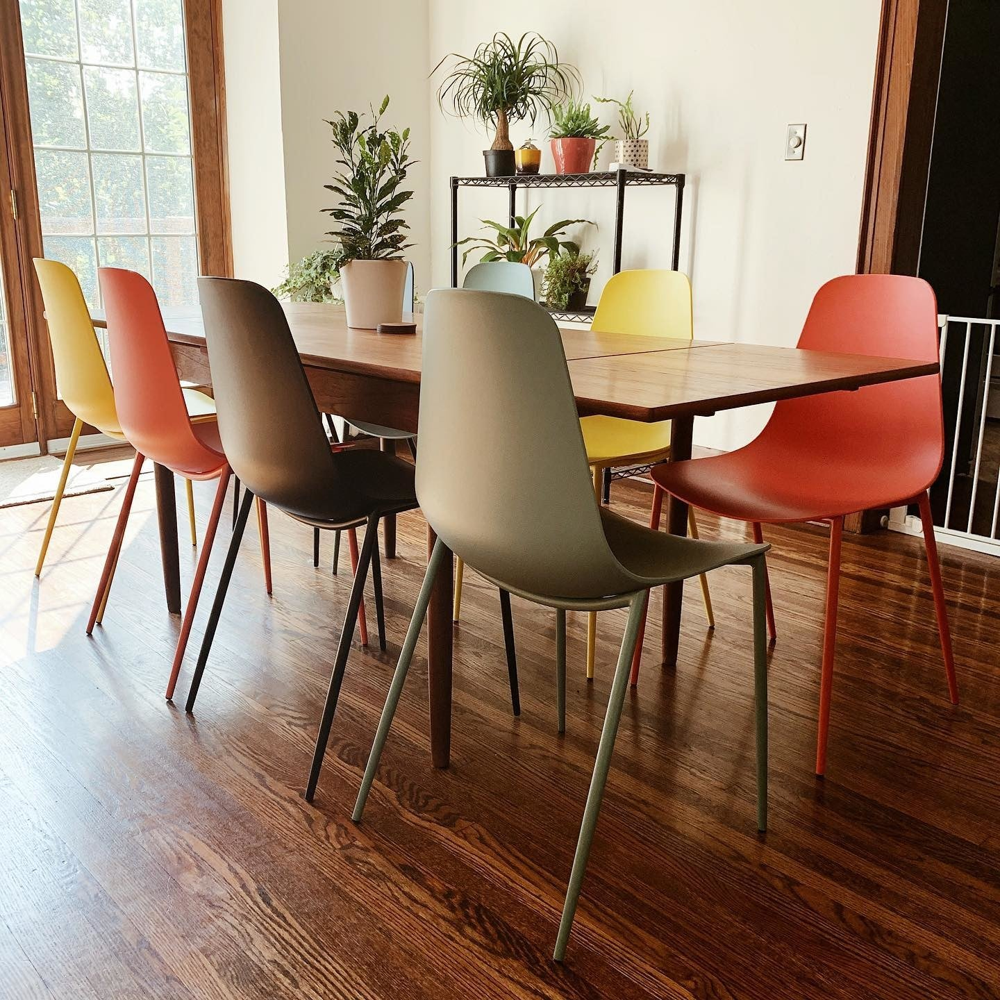
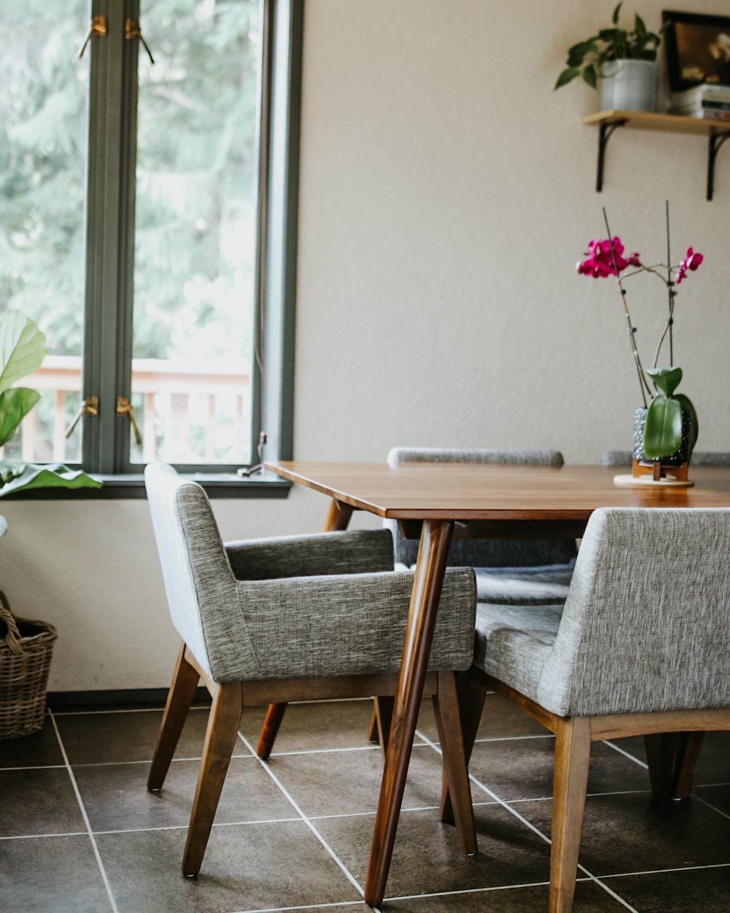
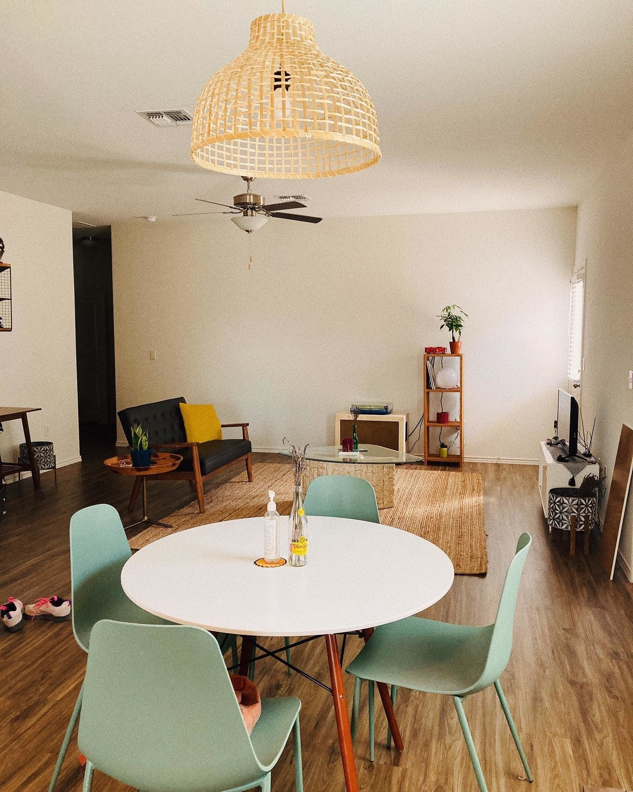
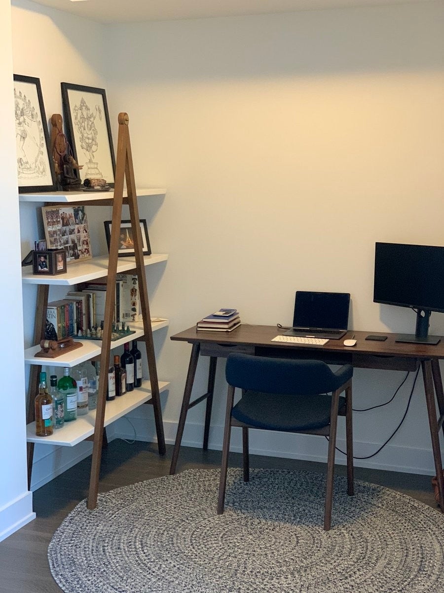

Collections
We’re constantly on the lookout for the world’s most beautiful buildings, from jaw-dropping historic theaters to brand-new libraries that make both bibliophiles and architecture lovers swoon. In honor of Furniture Week—our celebration of sofas, side tables, and everything in between—we’re turning our gaze to the decorative arts and exploring the best museum furniture collections around the world. The decorative arts focus on the design and manufacture of beautiful objects that are also functional. Museums like the Liang Yi Museum in Hong Kong and the Museum of Islamic Art in Cairo have stunning furniture collections that show how decor and design have changed over the centuries in specific regions of the world.
   